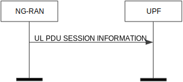

3GPP TS 38.415 V17.1.0 (2023-12)
Technical Specification
3rd Generation Partnership Project;
Technical Specification Group Radio Access Network;
NG-RAN;
PDU Session User Plane Protocol
(Release 17)
The present document has been developed within the 3rd Generation
Partnership Project (3GPP TM) and may be further elaborated
for the purposes of 3GPP..
The present document has not been subject to any approval process by the
3GPP Organizational Partners and shall not be implemented.
This Specification is provided for future development work within 3GPP
only. The Organizational Partners accept no liability for any use of
this Specification.
Specifications and Reports for implementation of the 3GPP TM
system should be obtained via the 3GPP Organizational Partners'
Publications Offices.
3GPP
Postal address
3GPP support office address
650 Route des Lucioles - Sophia Antipolis
Valbonne - FRANCE
Tel.: +33 4 92 94 42 00 Fax: +33 4 93 65 47 16
Internet
http://www.3gpp.org
Copyright Notification
No part may be reproduced except as authorized by written
permission.
The copyright and the foregoing restriction extend to reproduction in
all media.
© 2023, 3GPP Organizational Partners (ARIB, ATIS, CCSA, ETSI, TSDSI, TTA, TTC).
All rights reserved.
UMTS™ is a Trade Mark of ETSI registered for the benefit of its members
3GPP™ is a Trade Mark of ETSI registered for the benefit of its
Members and of the 3GPP Organizational Partners
LTE™ is a Trade Mark of ETSI registered for the benefit of its Members
and of the 3GPP Organizational Partners
GSM® and the GSM logo are registered and owned by the GSM Association
Foreword 5
1 Scope 6
2 References 6
3 Definitions and abbreviations 6
3.1 Definitions 6
3.2 Abbreviations 6
4 General 7
4.1 General aspects 7
5 PDU Session user plane protocol 7
5.1 General 7
5.2 PDU Session user plane protocol layer services 7
5.3 Services expected from the Transport Network Layer 7
5.4 Elementary procedures 7
5.4.1 Transfer of DL PDU Session Information 7
5.4.1.1 Successful operation 7
5.4.1.2 Unsuccessful operation 8
5.4.2 Transfer of UL PDU Session Information 8
5.4.2.1 Successful operation 8
5.4.2.2 Unsuccessful operation 9
5.5 Elements for the PDU Session user plane protocol 9
5.5.1 General 9
5.5.2 Frame format for the PDU Session user plane protocol 10
5.5.2.1 DL PDU SESSION INFORMATION (PDU Type 0) 10
5.5.2.2 UL PDU SESSION INFORMATION (PDU Type 1) 11
5.5.3 Coding of information elements in frames 12
5.5.3.1 PDU Type 12
5.5.3.2 Spare 12
5.5.3.3 QoS Flow Identifier (QFI) 12
5.5.3.4 Reflective QoS Indicator (RQI) 12
5.5.3.5 Padding 13
5.5.3.6 Paging Policy Presence (PPP) 13
5.5.3.7 Paging Policy Indicator (PPI) 13
5.5.3.8 QoS Monitoring Packet (QMP) 13
5.5.3.9 DL Sending Time Stamp 13
5.5.3.10 DL Sending Time Stamp Repeated 13
5.5.3.11 DL Received Time Stamp 14
5.5.3.12 UL Sending Time Stamp 14
5.5.3.13 DL Delay Ind. 14
5.5.3.14 DL Delay Result 14
5.5.3.15 UL Delay Ind. 14
5.5.3.16 UL Delay Result 14
5.5.3.17 Sequence Number Presence (SNP) 15
5.5.3.18 DL QFI Sequence Number 15
5.5.3.19 UL QFI Sequence Number 15
5.5.3.20 N3/N9 Delay Ind. 15
5.5.3.21 N3/N9 Delay Result 15
5.5.3.22 D1 UL PDCP Delay Result Ind 15
5.5.3.23 MBS Sequence Number Presence (MSNP) 15
5.5.3.24 DL MBS QFI Sequence Number 16
5.5.4 Timers 16
5.6 Handling of unknown, unforeseen and erroneous protocol data 16
Annex A (informative): Example of using Future Extension Field 17
A.1 Example of using Future Extension field 17
A.1.1 New IE Flags 17
Annex B (informative): Change history 18
This Technical Specification has been produced by the 3rd Generation Partnership Project (3GPP).
The contents of the present document are subject to continuing work within the TSG and may change following formal TSG approval. Should the TSG modify the contents of the present document, it will be re-released by the TSG with an identifying change of release date and an increase in version number as follows:
Version x.y.z
where:
x the first digit:
1 presented to TSG for information;
2 presented to TSG for approval;
3 or greater indicates TSG approved document under change control.
y the second digit is incremented for all changes of substance, i.e. technical enhancements, corrections, updates, etc.
z the third digit is incremented when editorial only changes have been incorporated in the document.
The present document specifies the PDU Session user plane protocol being used over the NG-U, Xn-U and N9 interfaces. Applicability to other interfaces is not precluded.
The following documents contain provisions which, through reference in this text, constitute provisions of the present document.
- References are either specific (identified by date of publication, edition number, version number, etc.) or non‑specific.
- For a specific reference, subsequent revisions do not apply.
- For a non-specific reference, the latest version applies. In the case of a reference to a 3GPP document (including a GSM document), a non-specific reference implicitly refers to the latest version of that document in the same Release as the present document.
[1] 3GPP TR 21.905: "Vocabulary for 3GPP Specifications".
[2] 3GPP TS 38.300: "NextGen Radio Access Network (NG-RAN); Overall description; Stage 2".
[3] 3GPP TS 29.281: "General Packet Radio System (GPRS) Tunnelling Protocol User Plane (GTPv1-U)".
[4] 3GPP TS 37.324: "E-UTRA and NR; Service Data Application Protocol (SDAP) specification".
[5] 3GPP TS 23.501: "System Architecture for the 5G System; Stage 2".
[6] IETF RFC 5905 (2010-06): "Network Time Protocol Version 4: Protocol and Algorithms Specification".
[7] 3GPP TS 38.413: "NG-RAN; NG Application Protocol (NGAP)".
For the purposes of the present document, the terms and definitions given in 3GPP TR 21.905 [1] and the following apply. A term defined in the present document takes precedence over the definition of the same term, if any, in 3GPP TR 21.905 [1].
Multicast Broadcast User Plane Function: as defined in TS 23.501 [5].
NG-U: as defined in TS 38.300 [2].
Xn-U: logical interface between NG-RAN nodes as defined in TS 38.300 [2].
For the purposes of the present document, the abbreviations given in 3GPP TR 21.905 [1] and the following apply. An abbreviation defined in the present document takes precedence over the definition of the same abbreviation, if any, in 3GPP TR 21.905 [1].
MBS Multicast Broadcast Service
MB-UPF Multicast Broadcast User Plane Function
PDCP Packet Data Convergence Protocol
PPI Paging Policy Indicator
PPP Paging Policy Presence
QFI QoS Flow Identifier
RQA Reflective QoS Attribute
RQI Reflective QoS Indication
SN Sequence Number
UP User Plane
UPF User Plane Function
The PDU Session User Plane protocol is located in the User Plane of the Radio Network Layer above the Transport Network Layer of the interface.
Each PDU session User Plane protocol instance is associated to one PDU Session.
In this version of the present document, the PDU session user plane protocol data is conveyed by GTP-U protocol means, more specifically, by means of the "PDU Session Container" GTP-U Extension Header as defined in TS 29.281 [3].
The PDU session UP layer uses the services of the Transport Network Layer in order to send its packets over the interface.
The following functions are provided by the PDU Session User Plane protocol:
- Provision of control information elements (e.g. QFI, RQI) associated with a PDU session.
The PDU session UP layer expects the following services from the Transport Network Layer:
- Transfer of PDU session User Plane PDUs.
The purpose of the Transfer of DL PDU Session Information procedure is to send control information elements related to the PDU Session from UPF to NG-RAN.
In the case of uplink and downlink data forwarding the DL PDU Session Information procedure shall also be used to send control information elements related to the PDU Session from NG-RAN node to UPF, or from UPF to NG-RAN node, or between NG-RAN nodes.
A PDU Session user plane instance making use of the Transfer of DL PDU Session Information procedure is associated to a single PDU Session. The Transfer of DL PDU Session Information procedure may be invoked whenever packets for that particular PDU Session need to be transferred across the related interface instance.
The DL PDU SESSION INFORMATION frame includes a QoS Flow Identifier (QFI) field associated with the transferred packet. The NG-RAN shall use the received QFI to determine the QoS flow and QoS profile which are associated with the received packet.
The DL PDU SESSION INFORMATION frame shall include the Reflective QoS Indicator (RQI) field to indicate whether user plane Reflective QoS shall be activated or not. The NG-RAN shall, if RQA has been configured for the involved QoS flow as specified in TS 38.413 [7], take the RQI into account as specified in TS 37.324 [4].
The DL PDU SESSION INFORMATION frame may also include a Paging Policy Indicator (PPI) field associated with the transferred packet. The NG-RAN shall use the received PPI to determine the paging policy differentiation which is associated with the received packet as described in TS 23.501 [5].
The DL PDU SESSION INFORMATION frame may also include a QoS Monitoring Packet (QMP) field and a DL sending time stamp field. The NG-RAN shall, if QoS monitoring has been configured for the included QFI field, perform delay measurement and QoS monitoring, as specified in TS 23.501 [5].
The DL PDU SESSION INFORMATION frame may also include a DL QFI Sequence Number field associated with the transferred packet. The NG-RAN shall, if the QoS flow has been configured eligible for redundant transport bearer in TS 38.413 [6], use the received DL QFI Sequence Number field to determine and eliminate duplicated packets for a given QoS flow as specified in TS 23.501 [5].
The DL PDU SESSION INFORMATION frame may also include a DL MBS QFI Sequence Number field associated with the transferred packet. The NG-RAN shall use the received DL MBS QFI Sequence Number field to determine the PDCP count that should be used when transferring the packet over the radio as specified in TS 38.300 [2].
When needed, the NG-RAN shall propagate the DL PDU Session Information to a peer NG-RAN.
Figure 5.4.1.1-1: Successful Transfer of DL PDU Session Information
Void.
The purpose of the Transfer of UL PDU Session Information procedure is to send control information elements related to the PDU Session from NG-RAN to UPF.
An UL PDU Session user plane instance making use of the Transfer of UL PDU Session Information procedure is associated to a single PDU Session. The Transfer of UL PDU Session Information procedure may be invoked whenever packets for that particular PDU Session need to be transferred across the related interface instance.
The UL PDU SESSION INFORMATION frame includes a QoS Flow Identifier (QFI) field associated with the transferred packet.
If QoS monitoring has been requested for the included QFI field, the UL PDU SESSION INFORMATION frame may include a QoS Monitoring Packet (QMP) field, a DL Sending Time Stamp Repeated field, a DL Receiving Time Stamp field, a UL Sending Time Stamp field, and/or Delay Result for UL or DL. If QoS monitoring with N3/N9 delay reporting has been requested for the included QFI field, the I-UPF may include in the UL PDU SESSION INFORMATION frame a N3/N9 Delay Ind. field, a N3/N9 Delay Result field and delay result for UL and DL if received from the RAN. The UPF shall, if supported, use this information to calculate UL, DL, or RTT delay as specified in TS 23.501 [5].
The UL PDU SESSION INFORMATION frame may also include a UL QFI Sequence Number field associated with the transferred packet. The UPF shall, if the QoS flow has been configured eligible for redundant transport bearer in TS 38.413 [6], use the received UL QFI Sequence Number field to determine and eliminate duplicated packets for a given QoS flow as specified in TS 23.501 [5].

Figure 5.4.2.1-1: Successful Transfer of UL PDU Session Information
Void.
In the present document the structure of frames are specified by using figures similar to figure 5.5.1-1.
| Bits |
|
|||||||
| 7 | 6 | 5 | 4 | 3 | 2 | 1 | 0 | |
| Field 1 | Field 2 | 1 | ||||||
| Field 3 | Field 4 | 2 | ||||||
| Field 4 continue | Spare | |||||||
| Field 6 | 2 | |||||||
| Field 6 continue | Padding bits | |||||||
| Future Extension | 0-m | |||||||
| Padding | 0-3 | |||||||
Figure 5.5.1-1: Example frame format
Unless otherwise indicated, fields which consist of multiple bits within an octet have the most significant bit located at the higher bit position (indicated above frame in figure 5.5.1-1). In addition, if a field spans several octets, most significant bits are located in lower numbered octets (right of frame in figure 5.5.1-1).
On the NG interface, the frame is transmitted starting from the lowest numbered octet. Within each octet, the bits are sent according to decreasing bit position (bit position 7 first).
Spare bits should be set to "0" by the sender and should not be checked by the receiver.
The header part of the frame is always an integer number of octets. The payload part is octet aligned (by adding 'Padding Bits' when needed).
The receiver should be able to remove an additional Future Extension
field that may be present.
See description of Future Extension field in A.1.
Padding octets may be added at the end of the frame, see Padding in 5.5.3.5.
This frame format is defined to allow the NG-RAN to receive some control information elements which are associated with the transfer of a packet over the interface.
The following shows the respective DL PDU SESSION INFORMATION frame.
| Bits |
|
|||||||
| 7 | 6 | 5 | 4 | 3 | 2 | 1 | 0 | |
| PDU Type (=0) | QMP | SNP | MSNP | Spare | 1 | |||
| PPP | RQI | QoS Flow Identifier | 1 | |||||
| PPI | Spare | 0 or 1 | ||||||
| DL Sending Time Stamp | 0 or 8 | |||||||
| DL QFI Sequence Number | 0 or 3 | |||||||
| DL MBS QFI Sequence Number | 0 or 4 | |||||||
| Padding | 0-3 | |||||||
Figure 5.5.2.1-1: DL PDU SESSION INFORMATION (PDU Type 0) Format
This frame format is defined to allow the UPF to receive some control information elements which are associated with the transfer of a packet over the interface.
The following shows the respective UL PDU SESSION INFORMATION frame.
| Bits |
|
|||||||
| 7 | 6 | 5 | 4 | 3 | 2 | 1 | 0 | |
| PDU Type (=1) | QMP | DL Delay Ind. | UL Delay Ind. | SNP | 1 | |||
| N3/N9 Delay Ind. | New IE Flag | QoS Flow Identifier | 1 | |||||
| DL Sending Time Stamp Repeated | 0 or 8 | |||||||
| DL Received Time Stamp | 0 or 8 | |||||||
| UL Sending Time Stamp | 0 or 8 | |||||||
| DL Delay Result | 0 or 4 | |||||||
| UL Delay Result | 0 or 4 | |||||||
| UL QFI Sequence Number | 0 or 3 | |||||||
| N3/N9 Delay Result | 0 or 4 | |||||||
| New IE flag 7(E) | New IE Flag 6 | New IE Flag 5 | New IE Flag 4 | New IE Flag 3 | New IE Flag 2 | New IE Flag 1 | New IE Flag 0 | 0 or 1 New IE Flags Octet |
| Spare | D1 UL PDCPDelay Result Ind | 0 or 1 | ||||||
| Padding | 0-3 | |||||||
Figure 5.5.2.2-1: UL PDU SESSION INFORMATION (PDU Type 1) Format
The New IE Flag in bit 6 of 2nd octet in UL PDU SESSION INFORMATION (PDU Type 1) indicates if the first octet of New IE Flags Octet is present or not.
Bit 0 of New IE Flags Octet in UL PDU SESSION INFORMATION (PDU Type 1) indicates if the D1 UL PDCP Delay Result Ind is present (1) or not (0)
Description: The PDU Type indicates the structure of the PDU session UP frame. The field takes the value of the PDU Type it identifies; i.e. "0" for PDU Type 0. The PDU type is in bit 4 to bit 7 in the first octet of the frame.
Value range: {0= DL PDU SESSION INFORMATION, 1=UL PDU SESSION INFORMATION, 2-15=reserved for future PDU type extensions}.
Field length: 4 bits.
Description: The spare field is set to "0" by the sender and should not be interpreted by the receiver. This field is reserved for later versions.
Value range: (0–2n-1).
Field Length: n bits.
Description: When present this parameter indicates the QoS Flow Identifier of the QoS flow to which the transferred packet belongs.
Value range: {0..26-1}.
Field length: 6 bits.
Description: This parameter indicates activation of the reflective QoS towards the UE for the transferred packet as described in clause 5.4.1.1. It is used only in the downlink direction. If RQA (Reflective QoS Activation) has not been configured for the involved QoS flow, the RQI shall be ignored by the NG-RAN node.
Value range: {0= Reflective QoS activation not triggered, 1= Reflective QoS activation triggered}.
Field length: 1 bit.
Description: The padding is included at the end of the frame to ensure that the PDU Session user plane protocol PDU length (including padding and the future extension) is (n*4– 2) octets, where n is a positive integer. If there is any future extension, the padding should be added after the future extensions.
Field Length: 0–3 octets.
Description: This parameter indicates the presence of the Paging Policy Indicator (PPI).
Value range: {0= Paging Policy Indicator not present, 1= Paging Policy Indicator present}.
Field length: 1 bit.
Description: When present, the Paging Policy Indicator is used for paging policy differentiation (see details in 3GPP TS 23.501 [5]). This field applies to PDU sessions of IP type.
Value range: {0..23-1}.
Field length: 3 bits.
Description: This parameter indicates that the transferred packet is used for QoS monitoring as described in clause 5.4.1.1 and clause 5.4.2.1. This parameter also indicates the presence of the DL Sending Time Stamp in the DL PDU Session Information frame and the presence of the DL Sending Time Stamp Repeated, the DL Receiving Time Stamp, the UL Sending Time Stamp in the UL PDU Session Information frame. If QoS monitoring has not been configured for the involved QoS flow, the QMP shall be ignored by the NG-RAN node.
Value range: {0= not used for QoS monitoring, 1= used for QoS monitoring}.
Field length: 1 bit.
Description: This field indicates the time when the UPF sends the DL PDU Session Information frame with the QMP field set to 1. It is used only in the downlink direction and encoded in the same format as the 64-bit timestamp format as defined in Section 6 of IETF RFC 5905 [6].
Value range: {0..264-1}.
Field length: 8 octets.
Description: This field indicates the value of the DL Sending Time Stamp field that the NG-RAN has received in the DL PDU Session Information frame with the QMP field set to 1 for the involved QoS flow. It is used only in the uplink direction and encoded in the same format as the 64-bit timestamp format as defined in Section 6 of IETF RFC 5905 [6]. The UPF shall, if supported, use this information to calculate DL or RTT delay between the NG-RAN and the UPF as specified in TS 23.501 [5].
Value range: {0..264-1}.
Field length: 8 octets.
Description: This field indicates the time when the NG-RAN node receives the DL PDU Session Information frame with the QMP field set to 1 for the involved QoS flow. It is used only in the uplink direction and encoded in the same format as the 64-bit timestamp format as defined in Section 6 of IETF RFC 5905 [6]. The UPF shall, if supported, use this information to calculate DL or RTT delay between the NG-RAN and the UPF as specified in TS 23.501 [5].
Value range: {0..264-1}.
Field length: 8 octets.
Description: This field indicates the time when the NG-RAN node sends this UL PDU Session Information frame. It is used only in the uplink direction and encoded in the same format as the 64-bit timestamp format as defined in Section 6 of IETF RFC 5905 [6]. The UPF shall, if supported, use this information to calculate UL or RTT delay between the NG-RAN and the UPF as specified in TS 23.501 [5].
Value range: {0..264-1}.
Field length: 8 octets.
Description: This parameter indicates the presence of DL Delay Result.
Value range: {0= DL Delay Result not present, 1= DL Delay Result present}.
Field length: 1 bit.
Description: This field indicates the downlink delay measurement result which is the sum of the delay incurred in NG-RAN (including the delay at gNB-CU-UP, on F1-U and on gNB-DU) and the delay over Uu interface in milliseconds for the involved QoS flow. It is used only in the uplink direction and encoded as an Unsigned32 binary integer value. The UPF shall, if supported, use this information to calculate DL or RTT delay as specified in TS 23.501 [5].
Value range: {0..232-1}.
Field length: 4 octets.
Description: This parameter indicates the presence of UL Delay Result.
Value range: {0= UL Delay Result not present, 1= UL Delay Result present}.
Field length: 1 bit.
Description: This field indicates the uplnk delay measurement result which is the sum of the delay incurred in NG-RAN (including the delay at gNB-CU-UP, on F1-U and on gNB-DU), the delay over Uu interface and the delay in the UE in milliseconds for the involved QoS flow. It is used only in the uplink direction and encoded as an Unsigned32 binary integer value. The UPF shall, if supported, use this information to calculate UL or RTT delay as specified in TS 23.501 [5].
Value range: {0..232-1}.
Field length: 4 octets.
Description: This parameter indicates the presence of the DL QFI Sequence Number in the DL PDU Session Information frame or the presence of the UL QFI Sequence Number in the UL PDU Session Information frame.
Value range: {0= DL/UL QFI Sequence Number not present, 1= DL/UL QFI Sequence Number present}.
Field length: 1 bit.
Description: This parameter indicates the sequence number as assigned by the UPF associated with a given QoS Flow.
Value range: {0..224-1}.
Field length: 3 octets.
Description: This parameter indicates the sequence number as assigned by the NG-RAN node associated with a given QoS flow.
Value range: {0..224-1}.
Field length: 3 octets.
Description: This parameter indicates the presence of N3/N9 Delay Result.
Value range: {0= N3/N9 Delay Result not present, 1= N3/N9 Delay Result present}.
Field length: 1 bit.
Description: This field indicates the accumulated N3 and N9 packet delay as specified in [5], and is reported by the I-UPF. The reported value is expressed in milliseconds and encoded as an Unsigned32 binary integer value.
Value range: {0..232-1}.
Field length: 4 octets.
Description: This parameter indicates if the UL Delay Result includes or not includes the D1 measurement (UL PDCP Packet Average Delay). This parameter shall be ignored if the UL Delay Ind is set to “0”.
Value range: {0= D1 UL PDCP Packet Average Delay measurement is not included, 1= D1 UL PDCP Packet Average Delay measurement is included}.
Field length: 1 bit.
Description: This parameter indicates the presence of the DL MBS QFI Sequence Number in the DL PDU Session Information frame.
Value range: {0= DL MBS QFI Sequence Number not present, 1= DL MBS QFI Sequence Number present}.
Field length: 1 bit.
Description: This parameter indicates the sequence number as assigned by the MB-UPF associated with a given MBS QoS Flow.
Value range: {0..232-1}.
Field length: 4 octets.
Void.
Void.
Annex A (informative):
Example of using Future Extension Field
| New IE flag 7(E) | New IE flag 6 |
New IE flag 5 |
New IE flag 4 |
New IE flag 3 |
New IE flag 2 |
New IE flag 1 |
New IE flag 0 |
1 Octet New IE Flags |
|---|---|---|---|---|---|---|---|---|
| New IE 1 | 3 Octets | |||||||
| New IE 2 | 2 Octets | |||||||
Figure A.1-1: Example of future Extension Field
In the Example of the future Extension Field, New IE flag 0 indicates if the New IE 1 is present or not. New IE flag 1 indicates if the new IE 2 is present or not.
Description: The New IE Flags IE is only present if at least one new IE is present. The New IE Flags IE contains flags indicating which new IEs that are present following the New IE Flags IE. The last bit position of the New IE Flags IE is used as the Extension Flag to allow the extension of the New IE Flags IE in the future. Extension octets of the New IE Flags IE shall follow directly after the first octet of the New IE Flags IE. When an extension octet of the New IE Flags IE is present, then all previous extension octets of the New IE Flags IE and the New IE Flags IE shall also be present, even if they have all their flag bits indicating no presence of their respective new IEs.
Annex B (informative):
Change history
| Change history | |||||||
| Date | Meeting | TDoc | CR | Rev | Cat | Subject/Comment | New version |
| 2018-04 | R3#99bis | R3-181720 | TS skeleton. | 0.0.1 | |||
| 2018-04 | R3#99bis | R3-182525 | Integration of R3-182399 with sections 4 and 5 and annex A1. | 0.1.0 | |||
| 2018-05 | R3#100 | R3-183594 | Integration of R3-182619 to remove editor's notes, remove FFS and fix some editorials; integration of R3-183413 introducing PDU type for downlink and uplink; removing the FFS of uplink frame type in line with R3-182619 for downlink frame type; integration of R3-183000 solving the FFS on QFI. | 0.2.0 | |||
| 2018-06 | RAN#80 | RP-180740 | For approval. | 1.0.0 | |||
| 2018-06 | RAN#80 | - | - | - | Specification approved at TSG-RAN and placed under change control | 15.0.0 | |
| 2018-09 | RAN#81 | RP-181922 | 0001 | 4 | F | NR Corrections (38.415 Baseline CR covering RAN3#101 agreements) | 15.1.0 |
| 2018-12 | RAN#82 | RP-182446 | 0003 | - | F | Rapporteur’s CR for TS38.415 | 15.2.0 |
| 2020-03 | RAN#87-e | RP-200425 | 0012 | 3 | B | E2E delay measurement for QoS monitoring for URLLC | 16.0.0 |
| 2020-07 | RAN#88-e | RP-201079 | 0010 | 5 | B | Introduction of NR_IIOT support to TS 38.415 | 16.1.0 |
| 2020-07 | RAN#88-e | RP-201085 | 0013 | 1 | F | QoS monitoring for URLLC | 16.1.0 |
| 2020-09 | RAN#89-e | RP-201950 | 0014 | - | F | Need of D1 and Reporting interval for Qos monitoring for URLLC | 16.2.0 |
| 2020-09 | RAN#89-e | RP-201948 | 0015 | 1 | F | Rapporteur Correction of QoS Flow Redundancy | 16.2.0 |
| 2020-12 | RAN#90-e | RP-202313 | 0016 | 1 | F | N3/N9 packet delay reporting for GTP-U path QoS monitoring | 16.3.0 |
| 2021-03 | RAN#91-e | RP-210240 | 0019 | 2 | F | UE support for D1 part of UL Delay and adding New IE Flag for extensibility | 16.4.0 |
| 2021-06 | RAN#92-e | RP-211333 | 0027 | A | Correction of PDU Type Frame | 16.5.0 | |
| 2021-12 | RAN#94-e | RP-212863 | 0030 | 2 | F | Correction for UL PDU Session Information | 16.6.0 |
| 2022-03 | RAN#95-e | RP-220236 | 0033 | D | Rapporteur Corrections of TS 38.415 | 17.0.0 | |
| 2022-03 | RAN#95-e | RP-220224 | 0034 | 1 | B | Introduction of NR MBS | 17.0.0 |
| 2023-12 | RAN#102 | RP-233849 | 0038 | 2 | F | Correction of NG-U | 17.1.0 |